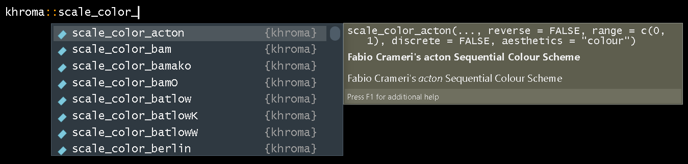

The default color palettes ggplot2 provides are generally good enough for a quick check, but they are overused and do not have very high contrast:
library('ggplot2') # for fancy figures
library('khroma') # for fancy palettes
library('cowplot') # for fancy multi-panel figures
library('colorspace') # required by colorblindr
library('colorblindr') # to simulate colorblind vision
theme_set(theme_bw()) # change default ggplot theme
p <-
ggplot(mtcars, aes(disp, mpg, color = factor(carb))) +
geom_point() +
labs(x = 'Displacement (cubic inches)', y = 'Miles per gallon (US)',
color = 'Carburetors')
p
Additionally, they are not colorblind-friendly:
cvd_grid(p)
While ggplot2 offers additional color palettes with more contrast, many of them are still not colorblind-friendly:
p + scale_color_brewer(type = 'qual', palette = 6)
cvd_grid(p + scale_color_brewer(type = 'qual', palette = 6))
And while the viridis palette (from the viridisLite package and included in the ggplot2 package) can be a good option for continuous palettes, it can still be hard to distinguish between colors in qualitative palettes:
p + scale_color_viridis_d()
cvd_grid(p + scale_color_viridis_d())
The khroma package provides multiple high-contrast, colorblind-friendly palettes for qualitative, diverging and sequential data, based on the work of Paul Tol (https://personal.sron.nl/~pault/) and Fabio Crameri (https://www.fabiocrameri.ch/).
p + khroma::scale_color_bright()
cvd_grid(p + scale_color_bright())
However, it is best to also use different shapes (in addition to different colors), when possible, to ensure people are able to distinguish between each legend item (which can be difficult with many colors – compare colors for 3 and 8 for deutan and protan versions, as well as the desaturated version). We can do this by specifying the shape argument. Note that we also need to change the name of the shape legend to ensure we get a single legend:
p_sh <-
ggplot(mtcars, aes(disp, mpg, color = factor(carb))) +
geom_point(aes(shape = factor(carb))) +
labs(x = 'Displacement (cubic inches)', y = 'Miles per gallon (US)',
color = 'Carburetors', shape = 'Carburetors')
p_sh
cvd_grid(p_sh)
khroma color palettesUnlike with the ggplot functions for color palettes, the khroma function names do not specify whether the function will produce a continuous or discrete color palette. To avoid confusion, you can type khroma::scale_color_ and press Tab to see what functions the package offers, and a helpful window should show up beside the function suggestion:

(If you want to change your RStudio theme, see this tutorial.)
To install colorblindr, you will first need to install the cowplot and colorspace packages:
remotes::install_github("wilkelab/cowplot")
install.packages("colorspace", repos = "http://R-Forge.R-project.org")
remotes::install_github("clauswilke/colorblindr")
install.packages('khroma')To read the help files for any of the functions in the packages, use the ? function, e.g. ?scale_color_bright.